Ați curățat coșul de gunoi (Recycle bin) și ați pierdut un fișier important și nu mai puteți să ȋl recuperați?
Acum există o soluție pentru acest lucru! Se ȋntȃmplă să se afle o serie de programe pe internet care pot să facă acest lucru. Unul dintre ele este RECUVA.
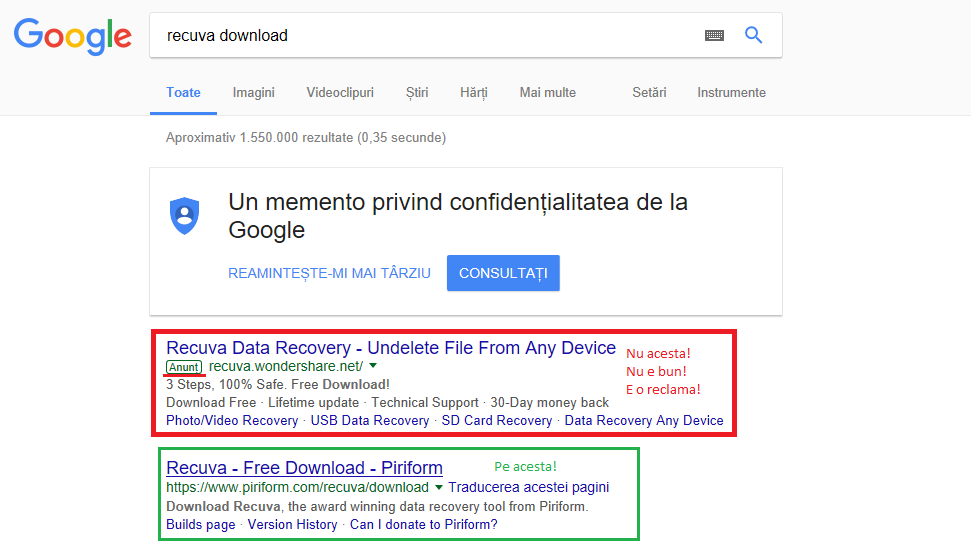
Intrați pe google.ro și tastați
recuva download. Apăsați pe primul rezultat dat,
pe site-ul piriform.com
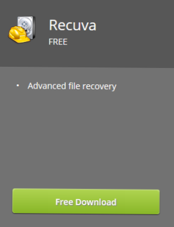
dați pe butonul "Free Download"
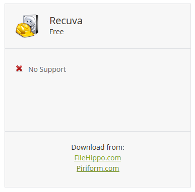
Apoi alegeți link-ul de la piriform.
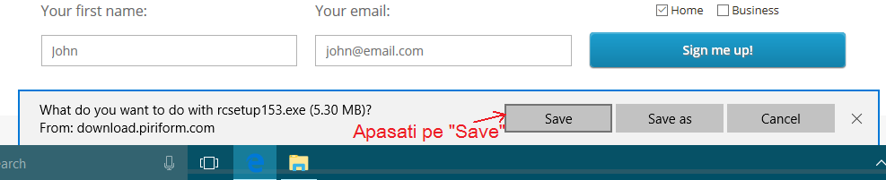
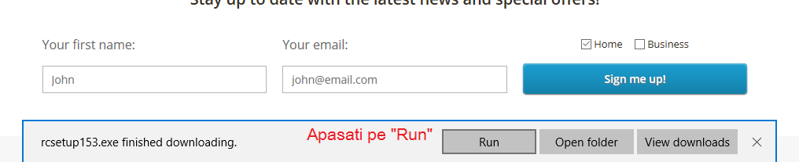
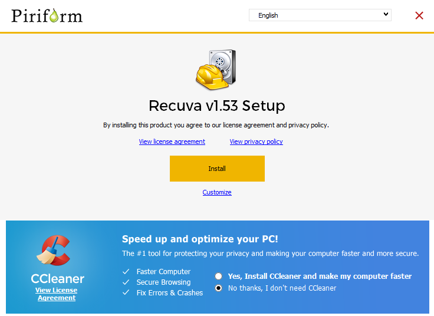
Imediat acesta se va descărca, dați apoi RUN, instalați prgramul, debifați cele 3 căsuțe din mijloc, INSTALL iar apoi se va deschide programul.
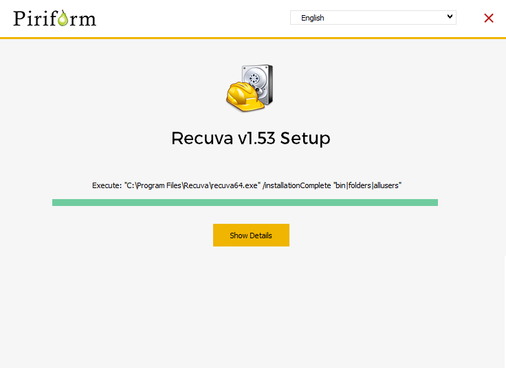
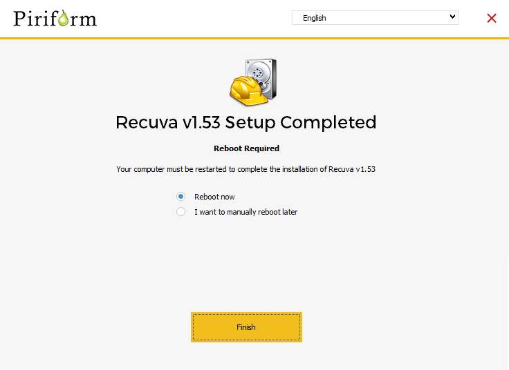
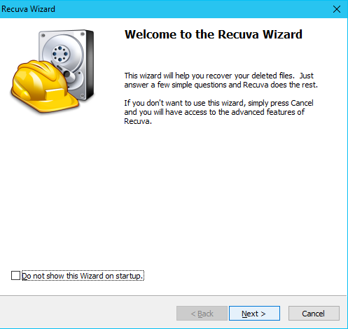
Ceea ce este interesant la acest program este că nu putem numai să recuperăm fișiere șterse permanent din diferite partiții ale computerului
ci și de pe stick-uri USB, telefoane, CD-uri etc.
La ȋnceput ne va ȋntȃmpina o fereastră care ne va ȋntreba ce vrem să facem.
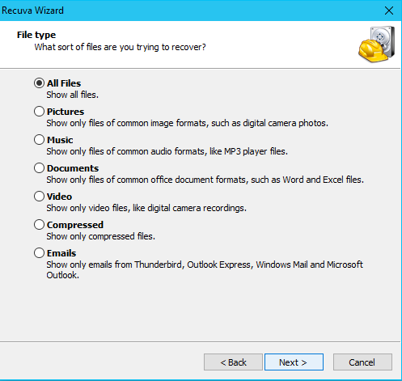
Dȃnd NEXT/INAINTE, recomand ca la „al doilea pas” să bifăm ȋntotdeauna prima căsuța ”all files”.
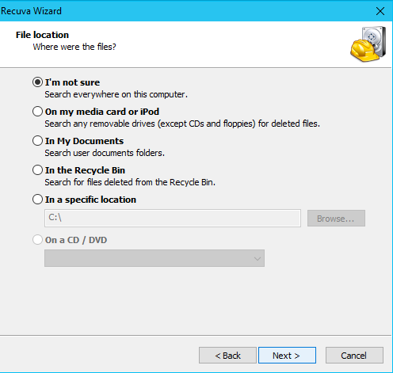
După aceea trebuie să specificăm locația/partiția de unde am șters fișierul.
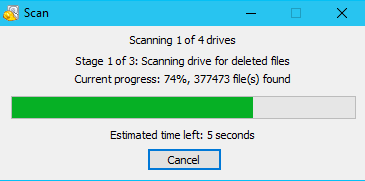
Dacă nu reușeste prima scanare puteți opta pentru ”deep scan”.
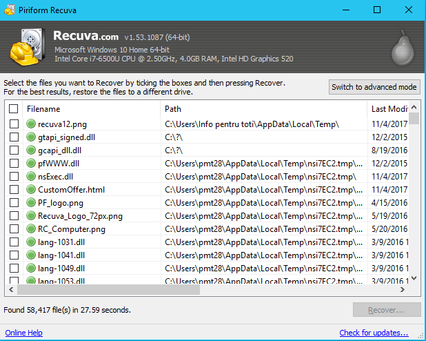
Observăm că RECUVA a găsit fișierul șters (permanent), click dreapta (pe el) -> ”Recover Highlighted...” „Recuperează fișierele evidentiațe”/-> o vom salva unde dorim.
Tot aici putem vedea că ne prezintă (in ”Status”) dacă fișierele mai pot fi recuperate sau nu. Cu cȃt timp trece mai mult de cȃnd am șters fișierul, cu atȃt va fi mai greu de recuperat.